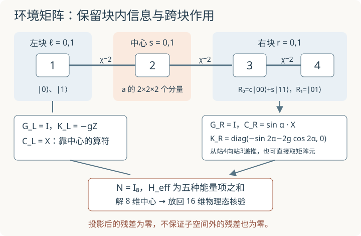

本页目录
基础衔接 09 · MPS 环境：把整条链压进局部矩阵
先修：MPS 范数与局部优化、乘积态往返扫描、路线验收。本讲把邻居标量提升为矩阵，推导任意键维下最近邻 Ising 链的环境递推，再完整求解一个四站、键维 2、中心 8 维的例子。只更新一次中心，不宣称已经实现一般 DMRG 扫描。
1. 从一个邻居数，变成一组环境矩阵
χ=1 时，邻居只提供一个期望值 x。χ>1 时，中心会连接多个左块态和右块态，必须保留它们之间的交叉矩阵元，不能把每个虚拟通道当成互不相干的概率。
在中心站 j 展开
左块包括站 1 到 j−1，右块包括 j+1 到末站。固定块态以后，a 是唯一变化的中心坐标。本页 Hamiltonian 固定为开放链
Pauli 本征值 ±1，能量单位 J=1。每侧保留三种矩阵，第一指标总是 bra，第二指标总是 ket：
\(H_L\) 只含左块内部的键与横场。右侧类似，\(C_R\) 用右块最靠近中心的 \(X_{j+1}\)。G 记录范数，K 记录块内能量，C 记录跨向中心的边界算符；三者作用不同。空块的起点为 G=(1)、K=(0)、C=(0)。
2. 五种项怎样进入中心问题
按坐标顺序 (ℓ,s,r)，将 H 的项分为左块、右块、中心横场与两条跨块键，得到
例如最后一项的矩阵元为 \(-\langle L_\ell|L_{\ell'}\rangle X_{ss'}\langle R_r|X_{j+1}|R_{r'}\rangle\)，正是跨中心与右邻的一条键。G 不能随手略掉；只有左右块态正交归一时 N=I。
求解 \(H_{\rm eff}a=ENa\)。这里 K 已包括环境的内部能量，因此 E 是完整态的能量，不再只是“中心附近两条键”的能量。一般非正交块需按上一讲处理 N 的秩和正定性。

3. 环境不是凭空给出的：从边界逐站递推
向左块末尾加入一个站，令新块态为
代入内积即可得到
三项分别是旧块内部能量、新站横场、旧末站到新站的一条键。最后一项必须用旧的 C；更新后新的 C 改为新站上的 X。若先覆盖旧 C，再计算 K，就会接错边界。
右侧从末站向中心加入一个站，写
为避免把转置和共轭的方向猜错，定义一次收缩
则
这套公式允许任意相容键维与复张量，针对的是本讲的最近邻 XX 与横场 Z 模型。更一般 Hamiltonian 通常用 MPO 组织更多算符通道，不能把三个环境矩阵无条件套到所有相互作用上。网页实验使用实张量。
4. 一个可以逐项算完的键维 2 右块
取 L=4，中心 j=2。左块态直接为 \(|L_0\rangle=|0\rangle,|L_1\rangle=|1\rangle\)，所以
右块取两个正交归一态
它们确实可以由两个 MPS 张量生成。末站列向量与第三站矩阵分别取
右块振幅是 \((B_3^{s_3}B_4^{s_4})_r\)。例如 00 给出 (c,0)，01 给出 (0,1)，11 给出 (s,0)。逐站满足右正交条件 \(\sum_sB_i^s(B_i^s)^\dagger=I\)。
从末站开始，递推先得到 \(G_4=I,K_4=-gZ,C_4=X\)；再加入第三站，得到
可以不靠递推公式再次核验。\(X_3|01\rangle=|11\rangle\)，与 \(R_0\) 的重叠为 s，故 C 的非对角元为 s。\(R_0\) 中 \(\langle X_3X_4\rangle=2cs=\sin2\alpha\)，\(\langle Z_3+Z_4\rangle=2(c^2-s^2)=2\cos2\alpha\)，所以 K₀₀ 如上。R₁ 的两自旋横场相抵、XX 期望为零；交叉能量项也为零。
5. 8 维中心解与 16 维物理态对账
中心有 \(2\times2\times2=8\) 个分量。G_L=G_R=I，故 N=I₈，将上面的 K、C 代入第 2 节即可构造一个实对称 8×8 矩阵。
完整映射是 \(W=I_2\otimes I_2\otimes R\)，其中 R 是按 00、01、10、11 排列的 4×2 列矩阵
因此可独立构造完整 16×16 自旋 Hamiltonian，核对 \(W^T W=I_8\) 和 \(H_{\rm eff}=W^THW\)。实际大链不会存储这个指数大的 W；四站模型只是让每个索引都可核验。
默认 α=45°、g=1，\(C_R=X/\sqrt2,K_R=\operatorname{diag}(-1,0)\)。计算账本为：
| 量 | 默认结果 |
|---|---|
| 局部最低能量 | −3.417406940 |
| 将 ψ=Wa 放回完整 H 重算的能量 | −3.417406940 |
| 同一开放四站模型的精确基态 | −4.758770483 |
| 局部方程残差 ‖H_eff a−Ea‖ | 数值舍入尺度，约 10⁻¹⁵ |
| 完整物理残差 ‖Hψ−Eψ‖ | 1.991292391 |
先预测再计算：改变 α，只是换了一种表示坐标吗？局部残差小能否使最后一行也接近零？α 范围 0° 到 90°，g 范围 0.2 到 2，默认值与上表一致。
无脚本时按上表核对；另有端点参照：α=0°、g=1 时，局部能量 −4.236067977，物理残差 √2；α=90°、g=1 时，局部能量 −2.493959207，物理残差 1。
图中的每个 α 都重新构造右块并优化中心。α 改变 span{R₀,R₁}，因而改变可搜索的物理子空间，并非只在同一子空间内作可逆换坐标。不同 α 的子空间同为 8 维，却通常没有包含关系，不能要求能量随 α 单调。
6. 为什么局部解得准，完整态仍不够好？
因为 W 是等距嵌入，局部本征方程只要求
它消除了残差在可搜索子空间中的分量，却没有消除正交补中的分量。对归一化 ψ，完整残差平方正是能量方差
其中 E 必须是该态的实际能量。零方差意味着某个本征态，也不能单靠它区分基态与激发态。
这里 χ=2 的默认能量甚至高于上一讲优化后的 χ=1 乘积态。没有违反变分家族包含关系：所有 χ≤2 的 MPS 包含 χ=1 态，但本讲锁死了左右块，只搜索其中一个 8 维子空间，未必包含上一讲得到的乘积态。扩大允许键维与改变固定环境不是同一操作。
下一步完整扫描需移动正交中心、更新环境并处理键维；两站点更新后还要做 SVD 分解与截断。这里完成的是一般键维环境递推及一次具体中心求解，为这些步骤提供可核验的中间量。
7. 两道迁移题
题一。 α=0° 时为什么中心与第三站之间的有效 XX 项消失？推导任意 g>0 时的局部最低能量。
从固定右块的物理含义推导
此时右块为 span{|00⟩,|01⟩}，第三站固定为 |0⟩，故投影后的 X₃ 为零，C_R=0。前三项剩下第一、二站的 \(-X_1X_2-g(Z_1+Z_2)\)，以及右块内部最低能 −2g。两自旋 Hamiltonian 的偶块本征值为 \(\pm\sqrt{1+4g^2}\)，奇块为 ±1；g>0 时最低为 \(-\sqrt{1+4g^2}\)。所以 \(E_{\min}=-2g-\sqrt{1+4g^2}\)，g=1 时给出 −4.236067977。
有效键消失只说明它在选定子空间内的矩阵元为零；完整 H 仍会把态带到子空间外，因此不能据此删除物理模型中的那条键。
题二。 将右块基换成 R′=RS，其中 S 是可逆但不正交的 2×2 矩阵。空间是否改变？能否继续令 G_R=I？
把基变换和物理子空间变化分开
列空间不变，但 \(G'_R=S^\dagger G_RS=S^\dagger S\)，\(K'_R=S^\dagger K_RS\)、\(C'_R=S^\dagger C_RS\)。令 T=I⊗I⊗S，则 \(N'=T^\dagger NT\)、\(H'_{\rm eff}=T^\dagger H_{\rm eff}T\)；用广义 Rayleigh 商仍得到同一个最低能量。继续错误地令 G_R=I，会把坐标长度误当物理范数。这与改变 α 的实验不同：可逆 S 保留原来的列空间。
速查与下一步
最近邻 Ising 每侧保留 G（范数）、K（内部 Hamiltonian）、C（边界 X）。从空块开始递推，组合成 N 与 H_eff，再将局部解放回完整态核验。本讲的一般公式不依赖 χ=1，实验固定 χ=2；MPO、两站点更新及完整扫描仍需后续展开。原始阅读：Schollwöck 的 MPS／DMRG 综述。核查：2026-09-08。
继续训练：两站点更新与 SVD 截断把环境、规范与 Schmidt 分解合在一次可复算更新中，并比较截断前后的物理能量。
继续训练：两站点完整往返逐步重建当前态的块基，记录候选接受与拒绝，并用非零残差识别能量停滞。
继续正交中心与环境缓存，将本讲递推真正接入逐站张量的双向扫描。